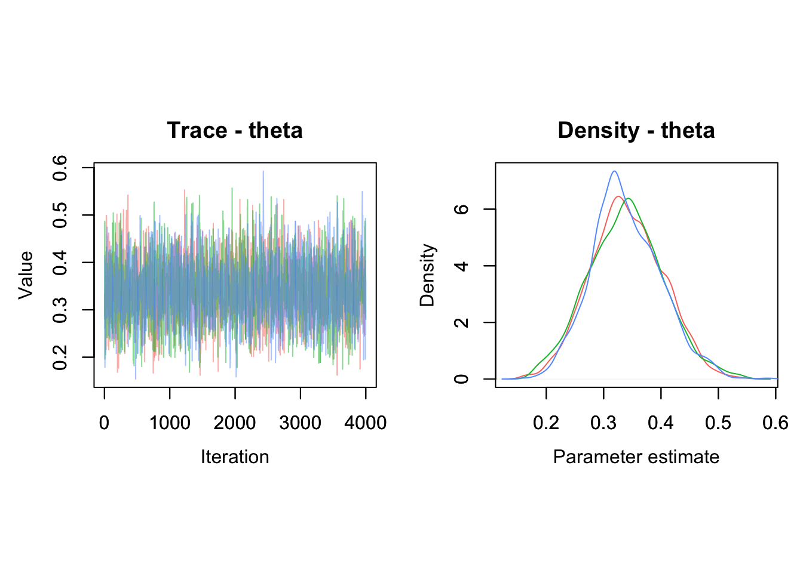

2 NIMBLE tutorial
2.1 Introduction
In this second chapter, you will get familiar with NIMBLE, an R package that implements up-to-date MCMC algorithms for fitting complex models. NIMBLE spares you from coding the MCMC algorithms by hand, and requires only the specification of a likelihood and priors for model parameters. Should you wish to dive deeper into the mechanics, NIMBLE also got you covered and allows you to write samples, use custom functions, etc. We will illustrate NIMBLE’s main features with a simple example, but the ideas hold for more complex problems.
2.2 What is NIMBLE?
NIMBLE stands for Numerical Inference for statistical Models using Bayesian and Likelihood Estimation (Figure 2.1). Briefly speaking, NIMBLE is an R package that implements for you MCMC algorithms to generate samples from the posterior distribution of model parameters. Freed from the burden of coding your own MCMC algorithms, you only have to specify a likelihood and priors to apply the Bayes theorem. To do so, NIMBLE makes this easy by using a syntax very similar to the R syntax, which should make your life easier. It is also a direct extension of the BUGS language is also used by other programs like WinBUGS, OpenBUGS, and JAGS.
So why use NIMBLE you may ask? The short answer is that NIMBLE is capable of so much more than just running MCMC algorithms! First, you will work from within R, but in the background NIMBLE will translate your code in C++ for (in general) faster computation. Second, NIMBLE extends the BUGS language for writing new functions and distributions of your own, or borrow those written by others. Third, NIMBLE gives you full control of the MCMC samplers, and you may pick other algorithms than the defaults. Fourth, NIMBLE comes with a library of numerical methods other than MCMC algorithms, including sequential Monte Carlo (for particle filtering), Monte Carlo Expectation Maximization (for maximum likelihood), Hamiltonian Monte Carlo (like in program Stan), and Laplace approximation (like in program TMB). Last but not least, the development team is friendly and helpful, and based on users’ feedbacks, NIMBLE folks work constantly at improving the package capabilities. The NIMBLE users google group is an open and inclusive space where everyone can receive help from the community: https://groups.google.com/g/nimble-users.
Figure 2.1: Logo of the NIMBLE R package designed by Luke Larson.
2.3 Getting started
To run NIMBLE, you will need to:
1. Build a model consisting of a likelihood and priors.
2. Read in some data.
3. Specify parameters you want to make inference about.
4. Pick initial values for parameters to be estimated (for each chain).
5. Provide MCMC details namely the number of chains, the length of the burn-in period and the number of iterations following burn-in.
First things first, let’s not forget to load the nimble package:
Note that before you can install nimble like any other R package, Windows users will need to install Rtools, and Mac users will need to install Xcode. More info and help trouble-shooting installation issues can be found here: https://r-nimble.org/download.
Now let’s go back to our example on animal survival from the previous chapter. First step is to build our model by specifying the binomial likelihood and a uniform prior on survival probability theta. We use the nimbleCode() function and wrap code within curly brackets:
model <- nimbleCode({
# likelihood
survived ~ dbinom(theta, released)
# prior
theta ~ dunif(0, 1)
# derived quantity
lifespan <- -1/log(theta)
})You can check that the model R object contains your code:
model
## {
## survived ~ dbinom(theta, released)
## theta ~ dunif(0, 1)
## lifespan <- -1/log(theta)
## }In the code above, survived and released are known, only theta needs to be estimated. The line survived ~ dbinom(theta, released) states that the number of successes or animals that have survived over winter, survived, is distributed as (that’s the ~) a binomial with released trials and probability of success or survival theta. Then the line theta ~ dunif(0, 1) assigns a uniform distribution between 0 and 1 as a prior to the survival probability. This is all you need, a likelihood and priors for model parameters, NIMBLE knows the Bayes theorem. The last line lifespan <- - 1/log(theta) calculates a quantity derived from theta, which is the expected lifespan assuming constant survival. If you’d like to know more about the calculation of life expectancy, check out Cook, Brower, and Croze (1967).
A few comments:
The most common distributions are readily available in NIMBLE. Among others, we will use later in the book
dbeta,dmultinomanddnorm. If you cannot find what you need in NIMBLE, you can write your own distributions as illustrated in Section 2.4.It does not matter in what order you write each line of code, NIMBLE uses what is called a declarative language for building models. In brief, you write code that tells NIMBLE what you want to achieve, and not how to get there. In contrast, an imperative language requires that you write what you want your program to do step by step.
-
You can think of models in NIMBLE as graphs as in Figure 2.2. A graph is made of relations (or edges) that can be of two types. A stochastic relation is signaled by a
~sign and defines a random variable in the model, such assurvivedortheta. A deterministic relation is signaled by a<-sign, likelifespan. Relations define nodes on the left - the children - in terms of other nodes on the right - the parents - and relations are directed arrows from parents to children. Such graphs are called directed acyclic graph or DAG.
Figure 2.2: Graph of the animal survival model. Survived is a stochastic node defined by its parents
releasedandtheta, whilelifespanis a deterministic node the value of which is defined exactly by the value of its parenttheta.
Second step in our workflow is to read in some data. We use a list in which each component corresponds to a known quantity in the model:
my.data <- list(released = 57, survived = 19)You can proceed with data passed this way, but you should know a little more about how NIMBLE sees data. NIMBLE distinguishes data and constants. Constants are values that do not change, e.g. vectors of known index values or the indices used to define for loops. Data are values that you might want to change, basically anything that only appears on the left of a ~. Declaring relevant values as constants is better for computational efficiency, but it is easy to forget, and fortunately NIMBLE will by itself distinguish data and constants. It will suggest you to move some data into constants to improve efficiency. I will not use the distinction between data and constants in this chapter, but in the next chapters it will become important.
Third step is to tell NIMBLE which nodes in your model you would like to keep track of, in other words the quantities you’d like to do inference about. In our model we want survival theta and lifespan:
parameters.to.save <- c("theta", "lifespan")In general you have many quantities in your model, including some of little interest that are not worth monitoring, and having full control on verbosity will prove handy.
Fourth step is to specify initial values for all model parameters. As a bare minimum, you need initial values for all nodes that only appear on the left side of a ~ in your code and are not given as data. To make sure that the MCMC algorithm explores the posterior distribution, we start different chains with different parameter values. You can specify initial values for each chain (here we specify for three chains) in a list and put them in yet another list:
init1 <- list(theta = 0.1)
init2 <- list(theta = 0.5)
init3 <- list(theta = 0.9)
initial.values <- list(init1, init2, init3)
initial.values
## [[1]]
## [[1]]$theta
## [1] 0.1
##
##
## [[2]]
## [[2]]$theta
## [1] 0.5
##
##
## [[3]]
## [[3]]$theta
## [1] 0.9Alternatively, you can write an R function that generates random initial values:
If you are using a function to generate random initial values, it’s always a good idea to set the seed in your code before you draw the initial values. For example like this:
my.seed <- 666
set.seed(my.seed)Setting the seed makes your code reproducible, which really helps if you need to trouble-shoot it later. Initialization problems are not uncommon when working with NIMBLE, and being able to reproduce the same initial values again is very useful for solving them.
Fifth and last step, you need to tell NIMBLE the number of chains to run, say n.chain, how long the burn-in period should be, say n.burnin, and the number of iterations following the burn-in period to be used for posterior inference:
n.iter <- 5000
n.burnin <- 1000
n.chains <- 3In NIMBLE, you specify the total number of iterations, say n.iter, so that the number of posterior samples per chain is n.iter - n.burnin. NIMBLE also allows discarding samples after burn-in, a procedure known as thinning. Thinning is fixed to 1 by default in NIMBLE so that all simulations are used to summarise posterior distributions. Link and Eaton (2012) offer a discussion of the pros and cons of thinning.
We now have all the ingredients to run our model, that is to sample from the posterior distribution of model parameters using MCMC simulations. This is accomplished using function nimbleMCMC():
mcmc.output <- nimbleMCMC(code = model,
data = my.data,
inits = initial.values,
monitors = parameters.to.save,
niter = n.iter,
nburnin = n.burnin,
nchains = n.chains)
## |-------------|-------------|-------------|-------------|
## |-------------------------------------------------------|
## |-------------|-------------|-------------|-------------|
## |-------------------------------------------------------|
## |-------------|-------------|-------------|-------------|
## |-------------------------------------------------------|NIMBLE goes through several steps that we will explain in Section 2.5. Function nimbleMCMC() takes other arguments that you might find useful. For example, one is setSeed. Just like with sampling initial values above, setting the seed within the MCMC call allows you to run the same chains (again), thus making your analyses reproducible and problems easier to debug (see Section 2.7.5). You can also get a summary of the outputs by specifying summary = TRUE. Conversely, if you would rather just get the MCMC samples back (in coda mcmc format) you can set samplesAsCodaMCMC = TRUE. Finally, you can suppress the progress bar if you find it too depressing when running long simulations with progressBar = FALSE. Check ?nimbleMCMC for more details.
Now let’s inspect what we have in mcmc.output:
str(mcmc.output)
## List of 3
## $ chain1: num [1:4000, 1:2] 0.907 0.907 0.907 0.907 0.853 ...
## ..- attr(*, "dimnames")=List of 2
## .. ..$ : NULL
## .. ..$ : chr [1:2] "lifespan" "theta"
## $ chain2: num [1:4000, 1:2] 0.787 0.894 1.291 1.388 1.388 ...
## ..- attr(*, "dimnames")=List of 2
## .. ..$ : NULL
## .. ..$ : chr [1:2] "lifespan" "theta"
## $ chain3: num [1:4000, 1:2] 0.745 0.745 0.745 0.886 1.136 ...
## ..- attr(*, "dimnames")=List of 2
## .. ..$ : NULL
## .. ..$ : chr [1:2] "lifespan" "theta"The R object mcmc.output is a list with three components, one for each MCMC chain. Let’s have a look to chain1 for example:
dim(mcmc.output$chain1)
## [1] 4000 2
head(mcmc.output$chain1)
## lifespan theta
## [1,] 0.9069 0.3320
## [2,] 0.9069 0.3320
## [3,] 0.9069 0.3320
## [4,] 0.9069 0.3320
## [5,] 0.8526 0.3095
## [6,] 0.7987 0.2859Each component of the list is a matrix. In rows, you have 4000 samples from the posterior distribution of theta, which corresponds to n.iter - n.burnin iterations. In columns, you have the quantities we monitor, theta and lifespan. From there, you can compute the posterior mean of theta:
mean(mcmc.output$chain1[,'theta'])
## [1] 0.3407You can also obtain the 95% credible interval for theta:
Let’s visualise the posterior distribution of theta with a histogram:
mcmc.output$chain1[,"theta"] %>%
as_tibble() %>%
ggplot() +
geom_histogram(aes(x = value), color = "white") +
labs(x = "survival probability")
There are less painful ways of doing posterior inference. In this book, I will use the R package MCMCvis to summarise and visualize MCMC outputs, but there are other perfectly valid options out there like ggmcmc, bayesplot and basicMCMCplots.
Let’s load the package MCMCvis:
To get the most common numerical summaries, the function MCMCsummary() does the job:
MCMCsummary(object = mcmc.output, round = 2)
## mean sd 2.5% 50% 97.5% Rhat n.eff
## lifespan 0.94 0.17 0.66 0.92 1.32 1 2513
## theta 0.34 0.06 0.22 0.34 0.47 1 2533You can use a caterpillar plot to visualise the posterior distributions of theta with MCMCplot():
MCMCplot(object = mcmc.output,
params = 'theta')
The point represents the posterior median, the thick line is the 50% credible interval and the thin line the 95% credible interval.
Visualization of a MCMC chain itself, i.e. the values of posterior samples plotted against iteration number, is called a trace. The trace and posterior density of theta can be obtained with MCMCtrace():
MCMCtrace(object = mcmc.output,
pdf = FALSE, # no export to PDF
ind = TRUE, # separate density lines per chain
params = "theta") We use the trace and density plots for assessing convergence and get an idea of whether there may be any estimation issues (see Section 1.6).
You can also add the diagnostics of convergence we discussed in the previous chapter:
MCMCtrace(object = mcmc.output,
pdf = FALSE,
ind = TRUE,
Rhat = TRUE, # add Rhat
n.eff = TRUE, # add eff sample size
params = "theta")
We calculated lifespan directly in our model with lifespan <- -1/log(theta). But you can also calculate this quantity from outside NIMBLE. This is a nice by-product of using MCMC simulations: You can obtain the posterior distribution of any quantity that is a function of your model parameters by applying this function to samples from the posterior distribution of these parameters. Especially when working with big models/data, it is recommended to keep any calculations that can be made “post-hoc” using the posterior samples outside of NIMBLE as this lessens memory load. In our example, all you need is samples from the posterior distribution of theta, which we pool between the three chains with:
theta_samples <- c(mcmc.output$chain1[,'theta'],
mcmc.output$chain2[,'theta'],
mcmc.output$chain3[,'theta'])To get samples from the posterior distribution of lifespan, we apply the function to calculate lifespan to the samples from the posterior distribution of survival:
lifespan <- -1/log(theta_samples)As usual then, you can calculate the posterior mean and 95% credible interval:
mean(lifespan)
## [1] 0.9398
quantile(lifespan, probs = c(2.5, 97.5)/100)
## 2.5% 97.5%
## 0.6629 1.3194You can also visualise the posterior distribution of lifespan:
lifespan %>%
as_tibble() %>%
ggplot() +
geom_histogram(aes(x = value), color = "white") +
labs(x = "lifespan")Now you’re good to go. For convenience I have summarized the steps above in the box below. The NIMBLE workflow provided with nimbleMCMC() allows you to build models and make inference. This is what you can achieve with other software like WinBUGS or JAGS.
NIMBLE workflow:
# model building
model <- nimbleCode({
# likelihood
survived ~ dbinom(theta, released)
# prior
theta ~ dunif(0, 1)
# derived quantity
lifespan <- -1/log(theta)
})
# read in data
my.data <- list(released = 57, survived = 19)
# specify parameters to monitor
parameters.to.save <- c("theta", "lifespan")
# pick initial values
initial.values <- function() list(theta = runif(1,0,1))
# specify MCMC details
n.iter <- 5000
n.burnin <- 1000
n.chains <- 3
# run NIMBLE
mcmc.output <- nimbleMCMC(code = model,
data = my.data,
inits = initial.values,
monitors = parameters.to.save,
niter = n.iter,
nburnin = n.burnin,
nchains = n.chains)
# calculate numerical summaries
MCMCsummary(object = mcmc.output, round = 2)
# visualize parameter posterior distribution
MCMCplot(object = mcmc.output,
params = 'theta')
# check convergence
MCMCtrace(object = mcmc.output,
pdf = FALSE, # no export to PDF
ind = TRUE, # separate density lines per chain
params = "theta")But NIMBLE is more than just another MCMC engine. It provides a programming environment so that you have full control when building models and estimating parameters. NIMBLE allows you to write your own functions and distributions to build models, and to choose alternative MCMC samplers or code new ones. This flexibility often comes with faster convergence and often faster runtime.
I have to be honest, learning these improvements over other software takes some reading and experimentation, and it might well be that you do not need to use any of these features. And it’s fine. In the next sections, I cover some of this advanced material. You may skip these sections and go back to this material later if you need it.
2.4 Programming
In NIMBLE you can write and use your own functions, or use existing R or C/C++ functions. This allows you to customize models the way you want.
2.4.1 NIMBLE functions
NIMBLE provides nimbleFunctions for programming. A nimbleFunction is like an R function, plus it can be compiled for faster computation. Going back to our animal survival example, we can write a nimbleFunction to compute lifespan:
computeLifespan <- nimbleFunction(
run = function(theta = double(0)) { # type declarations
ans <- -1/log(theta)
return(ans)
returnType(double(0)) # return type declaration
} )Within the nimbleFunction, the run section gives the function to be executed. It is written in the NIMBLE language. The theta = double(0) and returnType(double(0)) arguments tell NIMBLE that the input and output are single numeric values (scalars). Alternatively, double(1) and double(2) are for vectors and matrices, while logical(), integer() and character() are for logical, integer and character values.
You can use your nimbleFunction in R:
computeLifespan(0.8)
## [1] 4.481You can compile it and use the C++ code for faster computation:
CcomputeLifespan <- compileNimble(computeLifespan)
CcomputeLifespan(0.8)
## [1] 4.481You can also use your nimbleFunction in a model:
model <- nimbleCode({
# likelihood
survived ~ dbinom(theta, released)
# prior
theta ~ dunif(0, 1)
# derived quantity
lifespan <- computeLifespan(theta)
})The rest of the workflow remains the same:
my.data <- list(survived = 19, released = 57)
parameters.to.save <- c("theta", "lifespan")
initial.values <- function() list(theta = runif(1,0,1))
n.iter <- 5000
n.burnin <- 1000
n.chains <- 3
mcmc.output <- nimbleMCMC(code = model,
data = my.data,
inits = initial.values,
monitors = parameters.to.save,
niter = n.iter,
nburnin = n.burnin,
nchains = n.chains)
## |-------------|-------------|-------------|-------------|
## |-------------------------------------------------------|
## |-------------|-------------|-------------|-------------|
## |-------------------------------------------------------|
## |-------------|-------------|-------------|-------------|
## |-------------------------------------------------------|
MCMCsummary(object = mcmc.output, round = 2)
## mean sd 2.5% 50% 97.5% Rhat n.eff
## lifespan 0.94 0.16 0.66 0.92 1.31 1 2593
## theta 0.34 0.06 0.22 0.34 0.47 1 2652With nimbleFunctions, you can mimic basic R syntax, do linear algebra (e.g. compute eigenvalues), operate on vectors and matrices (e.g. inverse a matrix), use logical operators (e.g. and/or) and flow control (e.g. if-else). There is also a long list of common and less common distributions that can be used with nimbleFunctions.
To learn everything you need to know on writing nimbleFunctions, make sure to read chapter 11 of the NIMBLE manual at https://r-nimble.org/html_manual/cha-RCfunctions.html#cha-RCfunctions.
2.4.2 Calling R/C++ functions
If you’re like me, and too lazy to write your own functions, you can rely on the scientific community and use existing C, C++ or R code. The trick is to write a nimbleFunction that wraps access to that code which can then be used by NIMBLE. As an example, imagine you’d like to use an R function myfunction(), either a function you wrote yourself, or a function available in your favorite R package:
myfunction <- function(x) {
-1/log(x)
}Now wrap this function using nimbleRcall() or nimbleExternalCall() for a C or C++ function:
Rmyfunction <- nimbleRcall(prototype = function(x = double(0)){},
Rfun = 'myfunction',
returnType = double(0))In the call to nimbleRcall() above, the argument prototype specifies inputs (a single numeric value double(0)) of the R function Rfun that generates outputs returnType (a single numeric value double(0)).
Now you can call your R function from a model (or any nimbleFunctions):
model <- nimbleCode({
# likelihood
survived ~ dbinom(theta, released)
# prior
theta ~ dunif(0, 1)
lifespan <- Rmyfunction(theta)
})The rest of the workflow remains the same:
my.data <- list(survived = 19, released = 57)
parameters.to.save <- c("theta", "lifespan")
initial.values <- function() list(theta = runif(1,0,1))
n.iter <- 5000
n.burnin <- 1000
n.chains <- 3
mcmc.output <- nimbleMCMC(code = model,
data = my.data,
inits = initial.values,
monitors = parameters.to.save,
niter = n.iter,
nburnin = n.burnin,
nchains = n.chains)
## |-------------|-------------|-------------|-------------|
## |-------------------------------------------------------|
## |-------------|-------------|-------------|-------------|
## |-------------------------------------------------------|
## |-------------|-------------|-------------|-------------|
## |-------------------------------------------------------|
MCMCsummary(object = mcmc.output, round = 2)
## mean sd 2.5% 50% 97.5% Rhat n.eff
## lifespan 0.94 0.16 0.68 0.92 1.29 1 2597
## theta 0.34 0.06 0.23 0.34 0.46 1 2643Evaluating an R function from within NIMBLE slows down MCMC sampling, but if you can live with it, the cost is easily offset by the convenience of being able to use existing R functions.
2.4.3 User-defined distributions
With nimbleFunctions you can provide user-defined distributions to NIMBLE. You need to write functions for density (d) and simulation (r) for your distribution. As an example, we write our own binomial distribution:
# density
dmybinom <- nimbleFunction(
run = function(x = double(0),
size = double(0),
prob = double(0),
log = integer(0, default = 1)) {
returnType(double(0))
# compute binomial coefficient = size! / [x! (n-x)!] and take log
lchoose <- lfactorial(size) - lfactorial(x) - lfactorial(size - x)
# binomial density function = size! / [x! (n-x)!] * prob^x * (1-prob)^(size-x) and take log
logProb <- lchoose + x * log(prob) + (size - x) * log(1 - prob)
if(log) return(logProb)
else return(exp(logProb))
})
# simulation using the coin flip method (p. 524 in Devroye 1986)
# note: the n argument is required by NIMBLE but is not used, default is 1
rmybinom <- nimbleFunction(
run = function(n = integer(0, default = 1),
size = double(0),
prob = double(0)) {
x <- 0
y <- runif(n = size, min = 0, max = 1)
for (j in 1:size){
if (y[j] < prob){
x <- x + 1
}else{
x <- x
}
}
returnType(double(0))
return(x)
})You need to define the nimbleFunctions in R’s global environment for them to be accessed:
You can try out your function and simulate a single random value (n = 1 by default) from a binomial distribution with size 5 and probability 0.1:
rmybinom(size = 5, prob = 0.1)
## [1] 0All set. You can run your workflow:
model <- nimbleCode({
# likelihood
survived ~ dmybinom(prob = theta, size = released)
# prior
theta ~ dunif(0, 1)
})
my.data <- list(released = 57, survived = 19)
initial.values <- function() list(theta = runif(1,0,1))
n.iter <- 5000
n.burnin <- 1000
n.chains <- 3
mcmc.output <- nimbleMCMC(code = model,
data = my.data,
inits = initial.values,
niter = n.iter,
nburnin = n.burnin,
nchains = n.chains)
## |-------------|-------------|-------------|-------------|
## |-------------------------------------------------------|
## |-------------|-------------|-------------|-------------|
## |-------------------------------------------------------|
## |-------------|-------------|-------------|-------------|
## |-------------------------------------------------------|
MCMCsummary(mcmc.output)
## mean sd 2.5% 50% 97.5% Rhat n.eff
## theta 0.34 0.05976 0.2286 0.3378 0.4598 1 2970Having nimbleFunctions offers infinite possibilities to customize your models and algorithms. Besides what we covered already, you can write your own samplers. We will see an example in a minute, but I first need to tell you more about the NIMBLE workflow.
2.5 Under the hood
So far, you have used nimbleMCMC() which runs the default MCMC workflow. This is perfecly fine for most applications. However, in some situations you need to customize the MCMC samplers to improve or speed up convergence. NIMBLE allows you to look under the hood by using a detailed workflow in several steps: nimbleModel(), configureMCMC(), buildMCMC(), compileNimble() and runMCMC(). Note that nimbleMCMC() does all of this at once.
We write the model code, read in data and pick initial values as before:
model <- nimbleCode({
# likelihood
survived ~ dbinom(theta, released)
# prior
theta ~ dunif(0, 1)
# derived quantity
lifespan <- -1/log(theta)
})
my.data <- list(survived = 19, released = 57)
initial.values <- list(theta = 0.5)First step is to create the model as an R object (uncompiled model) with nimbleModel():
survival <- nimbleModel(code = model,
data = my.data,
inits = initial.values)You can look at its nodes:
survival$getNodeNames()
## [1] "theta" "lifespan" "survived"You can look at the values stored at each node:
survival$theta
## [1] 0.5
survival$survived
## [1] 19
survival$lifespan
## [1] 1.443
# this is -1/log(0.5)We can also calculate the log-likelihood at the initial value for theta:
survival$calculate()
## [1] -5.422
# this is dbinom(x = 19, size = 57, prob = 0.5, log = TRUE)The ability in NIMBLE to access the nodes of your model and to evaluate the model likelihood can help you in identifying bugs in your code. For example, if we provide a negative initial value for theta, survival$calculate() returns NA:
survival <- nimbleModel(code = model,
data = my.data,
inits = list(theta = -0.5))
survival$calculate()
## [1] NaNAs another example, if we convey in the data the information that more animals survived than were released, we’ll get an infinity value for the log-likelihood:
my.data <- list(survived = 61, released = 57)
initial.values <- list(theta = 0.5)
survival <- nimbleModel(code = model,
data = my.data,
inits = initial.values)
survival$calculate()
## [1] -InfAs a check that the model is correctly initialized and that your code is without bugs, the call to model$calculate() should return a number and not NA or -Inf:
my.data <- list(survived = 19, released = 57)
initial.values <- list(theta = 0.5)
survival <- nimbleModel(code = model,
data = my.data,
inits = initial.values)
survival$calculate()
## [1] -5.422You can obtain the graph of the model as in Figure 2.2 with:
survival$plotGraph()Second we compile the model with compileNimble():
Csurvival <- compileNimble(survival)With compileNimble(), the C++ code is generated, compiled and loaded back into R so that it can be used in R (compiled model):
Csurvival$theta
## [1] 0.5Now you have two versions of the model, survival is in R and Csurvival in C++. Being able to separate the steps of model building and parameter estimation is a strength of NIMBLE. This gives you a lot of flexibility at both steps. For example, imagine you would like to fit your model with maximum likelihood, then you can do it by wrapping your model in an R function that gets the likelihood and maximise this function. Using the C version of the model, you can write:
# function for negative log-likelihood to minimize
f <- function(par) {
Csurvival[['theta']] <- par # assign par to theta
ll <- Csurvival$calculate() # update log-likelihood with par value
return(-ll) # return negative log-likelihood
}
# evaluate function at 0.5 and 0.9
f(0.5)
## [1] 5.422
f(0.9)
## [1] 55.41
# minimize function
out <- optimize(f, interval = c(0,1))
round(out$minimum, 2)
## [1] 0.33By maximising the likelihood (or minimising the negative log-likelihood), you obtain the maximum likelihood estimate of animal survival, which is exactly 19 surviving animals over 57 released animals or 0.33.
Third we create a MCMC configuration for our model with configureMCMC():
survivalConf <- configureMCMC(survival)
## ===== Monitors =====
## thin = 1: theta
## ===== Samplers =====
## RW sampler (1)
## - thetaThis steps tells you the nodes that are monitored by default, and the MCMC samplers than have been assigned to them. Here theta is monitored, and samples from its posterior distribution are simulated with a random walk sampler similar to the Metropolis sampler we coded in the previous chapter in Section 1.5.3.
To monitor lifespan in addition to theta, you write:
survivalConf$addMonitors(c("lifespan"))
## thin = 1: lifespan, theta
survivalConf
## ===== Monitors =====
## thin = 1: lifespan, theta
## ===== Samplers =====
## RW sampler (1)
## - thetaThird, we create a MCMC function with buildMCMC() and compile it with compileNimble():
survivalMCMC <- buildMCMC(survivalConf)
CsurvivalMCMC <- compileNimble(survivalMCMC, project = survival)Note that models and nimbleFunctions need to be compiled before they can be used to specify a project.
Fourth, we run NIMBLE with runMCMC():
n.iter <- 5000
n.burnin <- 1000
samples <- runMCMC(mcmc = CsurvivalMCMC,
niter = n.iter,
nburnin = n.burnin)
## |-------------|-------------|-------------|-------------|
## |-------------------------------------------------------|We run a single chain but runMCMC() allows you to use multiple chains as with nimbleMCMC().
You can look into samples which contains values simulated from the posterior distribution of the parameters we monitor:
head(samples)
## lifespan theta
## [1,] 0.9093 0.3330
## [2,] 0.9093 0.3330
## [3,] 0.9093 0.3330
## [4,] 1.2095 0.4374
## [5,] 1.2095 0.4374
## [6,] 1.1835 0.4296From here, you can obtain numerical summaries with samplesSummary() (or MCMCvis::MCMCsummary()):
samplesSummary(samples)
## Mean Median St.Dev. 95%CI_low 95%CI_upp
## lifespan 0.9357 0.9194 0.16117 0.6831 1.2969
## theta 0.3386 0.3370 0.06128 0.2313 0.4625I have summarized the steps above in the box below.
Detailed NIMBLE workflow:
# model building
model <- nimbleCode({
# likelihood
survived ~ dbinom(theta, released)
# prior
theta ~ dunif(0, 1)
# derived quantity
lifespan <- -1/log(theta)
})
# read in data
my.data <- list(released = 57, survived = 19)
# pick initial values
initial.values <- function() list(theta = runif(1,0,1))
# create model as an R object (uncompiled model)
survival <- nimbleModel(code = model,
data = my.data,
inits = initial.values())
# compile model
Csurvival <- compileNimble(survival)
# create a MCMC configuration
survivalConf <- configureMCMC(survival)
# add lifespan to list of parameters to monitor
survivalConf$addMonitors(c("lifespan"))
# create a MCMC function and compile it
survivalMCMC <- buildMCMC(survivalConf)
CsurvivalMCMC <- compileNimble(survivalMCMC, project = survival)
# specify MCMC details
n.iter <- 5000
n.burnin <- 1000
n.chains <- 2
# run NIMBLE
samples <- runMCMC(mcmc = CsurvivalMCMC,
niter = n.iter,
nburnin = n.burnin,
nchain = n.chains)
# calculate numerical summaries
MCMCsummary(object = samples, round = 2)
# visualize parameter posterior distribution
MCMCplot(object = samples,
params = 'theta')
# check convergence
MCMCtrace(object = samples,
pdf = FALSE, # no export to PDF
ind = TRUE, # separate density lines per chain
params = "theta")At first glance, using several steps instead of doing all these at once with nimbleMCMC() seems odds. Why is it useful? Mastering the whole sequence of steps allows you to play around with samplers, by changing the samplers NIMBLE picks by default, or even writing your own samplers.
2.6 MCMC samplers
2.6.1 Default samplers
What is the default sampler used by NIMBLE in our example? You can answer this question by inspecting the MCMC configuration obtained with configureMCMC():
#survivalConf <- configureMCMC(survival)
survivalConf$printSamplers()
## [1] RW sampler: thetaNow that we have control on the MCMC configuration, let’s mess it up. We start by removing the default sampler:
survivalConf$removeSamplers(c('theta'))
survivalConf$printSamplers()And we change it for a slice sampler:
survivalConf$addSampler(target = c('theta'),
type = 'slice')
survivalConf$printSamplers()
## [1] slice sampler: thetaNow you can resume the workflow:
# create a new MCMC function and compile it:
survivalMCMC2 <- buildMCMC(survivalConf)
CsurvivalMCMC2 <- compileNimble(survivalMCMC2,
project = survival,
resetFunctions = TRUE) # to compile new functions
# into existing project,
# need to reset nimbleFunctions
# run NIMBLE:
samples2 <- runMCMC(mcmc = CsurvivalMCMC2,
niter = n.iter,
nburnin = n.burnin)
## |-------------|-------------|-------------|-------------|
## |-------------------------------------------------------|
# obtain numerical summaries:
samplesSummary(samples2)
## Mean Median St.Dev. 95%CI_low 95%CI_upp
## lifespan 0.9357 0.9231 0.16002 0.6645 1.2826
## theta 0.3387 0.3385 0.06098 0.2221 0.4586NIMBLE implements many samplers, and a list is available with ?samplers. For example, high correlation in (regression) parameters can make independent samplers inefficient. In that situation, block sampling might help which consists in proposing candidate values from a multivariate distribution that acknowledges correlation between parameters.
2.6.2 User-defined samplers
Allowing you to code your own sampler is another topic on which NIMBLE thrives. As an example, we focus on the Metropolis algorithm of Section 1.5.3 which we coded in R. In this section, we make it a nimbleFunction so that we can use it within our model:
my_metropolis <- nimbleFunction(
name = 'my_metropolis', # fancy name for our MCMC sampler
contains = sampler_BASE,
setup = function(model, mvSaved, target, control) {
# i) get dependencies for 'target' in 'model'
calcNodes <- model$getDependencies(target)
# ii) get sd of proposal distribution
scale <- control$scale
},
run = function() {
# (1) log-lik at current value
initialLP <- model$getLogProb(calcNodes)
# (2) current parameter value
current <- model[[target]]
# (3) logit transform
lcurrent <- log(current / (1 - current))
# (4) propose candidate value
lproposal <- lcurrent + rnorm(1, mean = 0, scale)
# (5) back-transform
proposal <- plogis(lproposal)
# (6) plug candidate value in model
model[[target]] <<- proposal
# (7) log-lik at candidate value
proposalLP <- model$calculate(calcNodes)
# (8) compute lik ratio on log scale
lMHR <- proposalLP - initialLP
# (9) spin continuous spinner and compare to ratio
if(runif(1,0,1) < exp(lMHR)) {
# (10) if candidate value is accepted, update current value
copy(from = model, to = mvSaved, nodes = calcNodes, logProb = TRUE, row = 1)
} else {
## (11) if candidate value is accepted, keep current value
copy(from = mvSaved, to = model, nodes = calcNodes, logProb = TRUE, row = 1)
}
},
methods = list(
reset = function() {}
)
)Compared to nimbleFunctions we wrote earlier, my_metropolis() contains a setup function which i) gets the dependencies of the parameter to update in the run function with Metropolis, the target node, that would be theta in our example and ii) extracts control parameters, that would be scale the standard deviation of the proposal distribution in our example. Then the run function implements the steps of the Metropolis algorithm: (1) get the log-likelihood function evaluated at the current value, (2) get the current value, (3) apply the logit transform to it, (4) propose a candidate value by perturbing the current value with some normal noise controled by the standard deviation scale, (5) back-transform the candidate value and (6) plug it in the model, (7) calculate the log-likelihood function at the candidate value, (8) compute the Metropolis ratio on the log scale, (9) compare output of a spinner and the Metropolis ratio to decide whether to (10) accept the candidate value and copy from the model to mvSaved or (11) reject it and keep the current value by copying from mvSaved to the model. Because this nimbleFunction is to be used as a MCMC sampler, several constraints need to be respected like having a contains = sampler_BASE statement or using the four arguments model, mvSaved, target and control in the setup function. Of course, NIMBLE implements a more advanced and efficient version of the Metropolis algorithm, you can look into it at https://github.com/cran/nimble/blob/master/R/MCMC_samplers.R#L184.
Now that we have our user-defined MCMC algorithm, we can change the default sampler for our new sampler as in Section 2.6.1. We start from scratch:
model <- nimbleCode({
# likelihood
survived ~ dbinom(theta, released)
# prior
theta ~ dunif(0, 1)
})
my.data <- list(survived = 19, released = 57)
initial.values <- function() list(theta = runif(1,0,1))
survival <- nimbleModel(code = model,
data = my.data,
inits = initial.values())
Csurvival <- compileNimble(survival)
survivalConf <- configureMCMC(survival)
## ===== Monitors =====
## thin = 1: theta
## ===== Samplers =====
## RW sampler (1)
## - thetaWe print the samplers used by default, remove the default sampler for theta, replace it with our my_metropolis() sampler with the standard deviation of the proposal distribution set to 0.1, and print again to make sure NIMBLE now uses our new sampler:
survivalConf$printSamplers()
## [1] RW sampler: theta
survivalConf$removeSamplers(c('theta'))
survivalConf$addSampler(target = 'theta',
type = 'my_metropolis',
control = list(scale = 0.1)) # standard deviation
# of proposal distribution
survivalConf$printSamplers()
## [1] my_metropolis sampler: theta, scale: 0.10000000000000001The rest of the workflow is unchanged:
survivalMCMC <- buildMCMC(survivalConf)
CsurvivalMCMC <- compileNimble(survivalMCMC,
project = survival)
samples <- runMCMC(mcmc = CsurvivalMCMC,
niter = 5000,
nburnin = 1000)
## |-------------|-------------|-------------|-------------|
## |-------------------------------------------------------|
samplesSummary(samples)
## Mean Median St.Dev. 95%CI_low 95%CI_upp
## theta 0.339 0.3377 0.05592 0.2374 0.4528You can re-run the analysis by setting the standard deviation of the proposal to different values, say 1 and 10, and compare the results to traceplots we obtained with our R implementation of the Metropolis algorithm in the previous chapter:
# standard deviation of proposal is 0.1
scale <- 0.1
Rmodel <- nimbleModel(code = model, data = my.data, inits = initial.values())
conf <- configureMCMC(Rmodel, monitors = c('theta'), print = FALSE)
conf$removeSamplers(c('theta'))
conf$addSampler(target = 'theta', type = 'my_metropolis', control = list(scale = scale))
Rmcmc <- buildMCMC(conf)
out <- compileNimble(list(model = Rmodel, mcmc = Rmcmc))
Cmcmc <- out$mcmc
samples_sd01 <- runMCMC(Cmcmc, niter = 10000, nburnin = 9000, progressBar = FALSE)
# standard deviation of proposal is 1
scale <- 1
Rmodel <- nimbleModel(code = model, data = my.data, inits = initial.values())
conf <- configureMCMC(Rmodel, monitors = c('theta'), print = FALSE)
conf$removeSamplers(c('theta'))
conf$addSampler(target = 'theta', type = 'my_metropolis', control = list(scale = scale))
Rmcmc <- buildMCMC(conf)
out <- compileNimble(list(model = Rmodel, mcmc = Rmcmc))
Cmcmc <- out$mcmc
samples_sd1 <- runMCMC(Cmcmc, niter = 10000, nburnin = 9000, progressBar = FALSE)
# standard deviation of proposal is 10
scale <- 10
Rmodel <- nimbleModel(code = model, data = my.data, inits = initial.values())
conf <- configureMCMC(Rmodel, monitors = c('theta'), print = FALSE)
conf$removeSamplers(c('theta'))
conf$addSampler(target = 'theta', type = 'my_metropolis', control = list(scale = scale))
Rmcmc <- buildMCMC(conf)
out <- compileNimble(list(model = Rmodel, mcmc = Rmcmc))
Cmcmc <- out$mcmc
samples_sd10 <- runMCMC(Cmcmc, niter = 10000, nburnin = 9000, progressBar = FALSE)
# trace plot for scenario with standard deviation 0.1
plot01 <- samples_sd01 %>%
as_tibble() %>%
ggplot() +
aes(x = 9001:10000, y = theta) +
geom_line() +
labs(x = "iterations", title = "scale = 0.1")
# trace plot for scenario with standard deviation 1
plot1 <- samples_sd1 %>%
as_tibble() %>%
ggplot() +
aes(x = 9001:10000, y = theta) +
geom_line() +
labs(x = "iterations", title = "scale = 1")
# trace plot for scenario with standard deviation 10
plot10 <- samples_sd10 %>%
as_tibble() %>%
ggplot() +
aes(x = 9001:10000, y = theta) +
geom_line() +
labs(x = "iterations", title = "scale = 10")
# Assemble all three trace plots
library(patchwork)
plot01 + plot1 + plot102.7 Tips and tricks
Before closing this chapter on NIMBLE, I thought it’d be useful to have a section gathering a few tips and tricks that would make your life easier.
2.7.1 Precision vs standard deviation
In other software like JAGS, the normal distribution is parameterized with mean mu and a parameter called precision, often denoted tau, the inverse of the variance you are used to. Say we use a normal prior on some parameter epsilon with epsilon ~ dnorm(mu, tau). We’d like this prior to be vague, therefore tau should be small, say 0.01 so that the variance of the normal distribution is large, 1/0.01 = 100 here. This subtlety is the source of problems (and frustration) when you forget that the second parameter is precision and use epsilon ~ dnorm(mu, 100), because then the variance is actually 1/100 = 0.01 and the prior is very informative, and peaked on mu. In NIMBLE you can use this parameterisation as well as the more natural parameterisation epsilon ~ dnorm(mu, sd = 100) which avoids confusion.
2.7.2 Indexing
NIMBLE does not guess the dimensions of objects. In other software like JAGS you can write sum.x <- sum(x[]) to calculate the sum over all components of x. In NIMBLE you need to write sum.x <- sum(x[1:n]) to sum the components of x from 1 up to n. Specifying dimensions can be annoying, but I find it useful as it forces me to think of what I am doing and to keep my code self-explaining.
2.7.3 Faster compilation
You might have noticed that compilation in NIMBLE takes time. When you have large models (with lots of nodes), compilation can take forever. You can set calculate = FALSE in nimbleModel() to disable the calculation of all deterministic nodes and log-likelihood. The downside of not doing the calculate(), is that you might not be able to identify issues that could help you save time in the long run. You can also use useConjugacy = FALSE in configureMCMC() to disable the search for conjugate samplers. With the animal survival example, you would do:
model <- nimbleCode({
# likelihood
survived ~ dbinom(theta, released)
# prior
theta ~ dunif(0, 1)
})
my.data <- list(survived = 19, released = 57)
initial.values <- function() list(theta = runif(1,0,1))
survival <- nimbleModel(code = model,
data = my.data,
inits = initial.values(),
calculate = FALSE) # first tip
Csurvival <- compileNimble(survival)
survivalConf <- configureMCMC(survival)
## ===== Monitors =====
## thin = 1: theta
## ===== Samplers =====
## RW sampler (1)
## - theta
survivalMCMC <- buildMCMC(survivalConf, useConjugacy = FALSE) # second tip
CsurvivalMCMC <- compileNimble(survivalMCMC,
project = survival)
samples <- runMCMC(mcmc = CsurvivalMCMC,
niter = 5000,
nburnin = 1000)
## |-------------|-------------|-------------|-------------|
## |-------------------------------------------------------|
samplesSummary(samples)
## Mean Median St.Dev. 95%CI_low 95%CI_upp
## theta 0.3402 0.3391 0.06029 0.2258 0.46162.7.4 Updating MCMC chains
Sometimes it is useful to run your MCMC chains a little bit longer to improve convergence. Re-starting from the run in previous section, you can use:
niter_ad <- 6000
CsurvivalMCMC$run(niter_ad, reset = FALSE)
## |-------------|-------------|-------------|-------------|
## |-------------------------------------------------------|Then you can extract the matrix of previous MCMC samples augmented with new ones and obtain numerical summaries:
more_samples <- as.matrix(CsurvivalMCMC$mvSamples)
samplesSummary(more_samples)
## Mean Median St.Dev. 95%CI_low 95%CI_upp
## theta 0.3402 0.3382 0.05975 0.2281 0.4632You can check that more_samples contains 10000 samples, 4000 from the call to runMCMC() plus 6000 additional samples. Note that this only works if you are using the detailed NIMBLE workflow. It does not work with the nimbleMCMC() wrapper function.
2.7.5 Reproducibility
If you want your results to be reproducible, you can control the state of R the random number generator with the setSeed argument in functions nimbleMCMC() and runMCMC(). Going back to the animal survival example, you can check that two calls to nimbleMCMC() give the same results when setSeed is set to the same value. Note that we need to specify a seed for each chain, hence a vector of three components here:
# first call to nimbleMCMC()
mcmc.output1 <- nimbleMCMC(code = model,
data = my.data,
inits = initial.values,
niter = 5000,
nburnin = 1000,
nchains = 3,
summary = TRUE,
setSeed = c(2024, 2025, 2026))
## |-------------|-------------|-------------|-------------|
## |-------------------------------------------------------|
## |-------------|-------------|-------------|-------------|
## |-------------------------------------------------------|
## |-------------|-------------|-------------|-------------|
## |-------------------------------------------------------|
# second call to nimbleMCMC()
mcmc.output2 <- nimbleMCMC(code = model,
data = my.data,
inits = initial.values,
niter = 5000,
nburnin = 1000,
nchains = 3,
summary = TRUE,
setSeed = c(2024, 2025, 2026))
## |-------------|-------------|-------------|-------------|
## |-------------------------------------------------------|
## |-------------|-------------|-------------|-------------|
## |-------------------------------------------------------|
## |-------------|-------------|-------------|-------------|
## |-------------------------------------------------------|
# outputs from both calls are the same
mcmc.output1$summary$all.chains
## Mean Median St.Dev. 95%CI_low 95%CI_upp
## theta 0.339 0.3363 0.06141 0.2245 0.4618
mcmc.output2$summary$all.chains
## Mean Median St.Dev. 95%CI_low 95%CI_upp
## theta 0.339 0.3363 0.06141 0.2245 0.4618Note that to make your workflow reproducible, you need to set the seed not only within the nimbleMCMC() call, but also before setting your initial values if you are using a randomized function for that.
2.7.6 Parallelization
To speed up your analyses, you can run MCMC chains in parallel. This is what the package jagsUI accomplishes for JAGS users. Here, we use the parallel package for parallel computation:
library(parallel)First you create a cluster using the total amount of cores you have but one to make sure your computer can go on working:
nbcores <- detectCores() - 1
my_cluster <- makeCluster(nbcores)Then you wrap your workflow in a function to be run in parallel:
workflow <- function(seed, data) {
library(nimble)
model <- nimbleCode({
# likelihood
survived ~ dbinom(theta, released)
# prior
theta ~ dunif(0, 1)
})
set.seed(123) # for reproducibility
initial.values <- function() list(theta = runif(1,0,1))
survival <- nimbleModel(code = model,
data = data,
inits = initial.values())
Csurvival <- compileNimble(survival)
survivalMCMC <- buildMCMC(Csurvival)
CsurvivalMCMC <- compileNimble(survivalMCMC)
samples <- runMCMC(mcmc = CsurvivalMCMC,
niter = 5000,
nburnin = 1000,
setSeed = seed)
return(samples)
}Now we run the code using parLapply(), which uses cluster nodes to execute our workflow:
output <- parLapply(cl = my_cluster,
X = c(2022, 666),
fun = workflow,
data = list(survived = 19, released = 57))In the call to parLapply, we specify X = c(2022, 666) to ensure reproducibility. We use two alues 2022 and 666 to set the seed in workflow(), which means we run two instances of our workflow, or two MCMC chains. Note that we also have a line set.seed(123) in the workflow() function to ensure reproducibility while drawing randomly initial values.
It’s good practice to close the cluster with stopCluster() so that processes do not continue to run in the background and slow down other processes:
stopCluster(my_cluster)By inspecting the results, you can see that the object output is a list with two components, one for each MCMC chain:
str(output)
## List of 2
## $ : num [1:4000, 1] 0.393 0.369 0.346 0.346 0.346 ...
## ..- attr(*, "dimnames")=List of 2
## .. ..$ : NULL
## .. ..$ : chr "theta"
## $ : num [1:4000, 1] 0.435 0.435 0.435 0.435 0.243 ...
## ..- attr(*, "dimnames")=List of 2
## .. ..$ : NULL
## .. ..$ : chr "theta"Eventually, you can obtain numerical summaries:
MCMCsummary(output)
## mean sd 2.5% 50% 97.5% Rhat n.eff
## theta 0.3361 0.06148 0.2215 0.3335 0.4594 1 17792.7.7 Incomplete and incorrect initialization
When you run nimbleMCMC() or nimbleModel(), you may get warnings thrown at you by NIMBLE like ‘This model is not fully initialized’ or ‘value is NA or NaN even after trying to calculate’. This is not necessarily an error, but it ‘reflects missing values in model variables’ (incomplete initialization). In this situation, NIMBLE will initialize nodes with NAs by drawing from priors, and it will work or not. When possible, I try to initialize all nodes (full initialization). The process can be a bit of a headache, but it helps understanding the model structure better. Going back to our animal survival example, let’s purposedly forget to provide an initial value for theta:
model <- nimbleCode({
# likelihood
survived ~ dbinom(theta, released)
# prior
theta ~ dunif(0, 1)
})
#initial.values <- list(theta = runif(1,0,1))
survival <- nimbleModel(code = model,
data = list(survived = 19, released = 57))To see which variables are not initialized, we use initializeInfo():
# survival$calculate() # gives NA
survival$initializeInfo()Now that we know theta was not initialized, we can fix the issue and resume our workflow:
survival$theta <- 0.5 # assign initial value to theta
survival$calculate()
## [1] -5.422
Csurvival <- compileNimble(survival)
survivalMCMC <- buildMCMC(Csurvival)
## ===== Monitors =====
## thin = 1: theta
## ===== Samplers =====
## RW sampler (1)
## - theta
CsurvivalMCMC <- compileNimble(survivalMCMC)
samples <- runMCMC(mcmc = CsurvivalMCMC,
niter = 5000,
nburnin = 1000)
## |-------------|-------------|-------------|-------------|
## |-------------------------------------------------------|
samplesSummary(samples)
## Mean Median St.Dev. 95%CI_low 95%CI_upp
## theta 0.3402 0.338 0.06025 0.2277 0.4608When working with larger models, it can happen that NIMBLE’s internal simulation produces initial values for different parameters (nodes) that are incompatible with each other and violate certain model assumptions. If we go ahead and run the MCMC on a model where this is the case, a range of different warning messages may appear to indicate the problem. At first, they may not seem very intuitive (e.g. “Log probability is -Inf”, “Log probability is NaN”, “Slice sampler reached the maximum number of contractions”, etc.), but they are signals that you may want to double-check our initialization.
2.7.8 Vectorization
Vectorization is the process of replacing a loop by a vector so that instead of processing a single value at a time, you process a set of values at once. As an example, instead of writing:
for(i in 1:n){
x[i] <- mu + epsilon[i]
}you would write:
x[1:n] <- mu + epsilon[1:n]Vectorization can make your code more efficient by manipulating one vector node x[1:n] instead of n nodes x[1], …, x[n]. As an example, you may have a look to the vectorized flavor of the binomial distribution written by Pierre Dupont at https://github.com/nimble-dev/nimbleSCR/blob/master/nimbleSCR/R/dbinom_vector.R. Note that per now, vectorization only works for deterministic nodes (relationships with <-) but not stochastic ones (relationships with ~).
2.8 Summary
NIMBLE is an R package that implements for you MCMC algorithms to generate samples from the posterior distribution of model parameters. You only have to specify a likelihood and priors using the BUGS language to apply the Bayes theorem.
NIMBLE is more than just another MCMC engine. It provides a programming environment so that you have full control when building models and estimating parameters.
At the core of NIMBLE are
nimbleFunctionswhich you can write and compile for faster computation. WithnimbleFunctionsyou can mimic basic R syntax, work with vectors and matrices, use logical operators and flow control, and specify many distributions.There are two workflows to run NIMBLE. In most situations,
nimbleMCMC()will serve you well. When you need more control, you can adopt a detailed workflow withnimbleModel(),configureMCMC(),buildMCMC(),compileNimble()andrunMCMC().By having full control of the workflow, you can change default MCMC samplers and even write your own samplers.
2.9 Suggested reading
In this chapter, I have only scratched the surface of what NIMBLE is capable of. Below is a list of pointers that should help you going further with NIMBLE.
The NIMBLE folks make a lot of useful resources available through the official website https://r-nimble.org.
The NIMBLE manual https://r-nimble.org/html_manual/cha-welcome-nimble.html reads like a book with clear explanations and relevant examples.
You can learn a lot by going through examples at https://r-nimble.org/examples and training material from NIMBLE workshops at https://github.com/nimble-training.
You can keep the NIMBLE cheatsheet https://r-nimble.org/cheatsheets/NimbleCheatSheet.pdf near you to remind yourself of the workflow, how to write and use models, or which functions and distributions are available.
If you have questions, feel free to get in touch with the community of NIMBLE users by emailing the discussion group https://groups.google.com/forum/#!forum/nimble-users. This is a great place to learn, and folks who take the time to answer questions are kind and provide constructive answers. When possible, make sure to provide a reproducible example illustrating your problem.
You can cite the following reference when using NIMBLE in a publication:
de Valpine, P., D. Turek, C. J. Paciorek, C. Anderson-Bergman, D. Temple Lang, and R. Bodik (2017). Programming With Models: Writing Statistical Algorithms for General Model Structures With NIMBLE. Journal of Computational and Graphical Statistics 26 (2): 403–13.